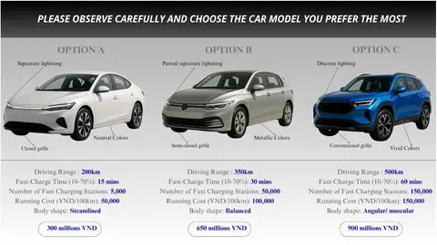
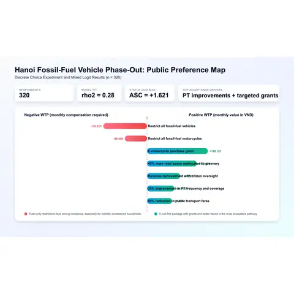

Projects archive
Market research and applied analytics projects.
Eleven projects organized for quick review: what decision needed evidence, what methods were used, what result changed the interpretation, and where the supporting visuals or records sit.
- 11
- Projects
- 5
- Domains
- 11+
- Methods
- 100+
- Deliverables
Featured projects
Three research stories to open first.

Hotel customer segmentation
Method: aspect-level sentiment and clustering across 74,896 reviews.
Output: 10 guest profilesStudent diet quality in Vietnam
Method: cross-sectional survey and regression modeling across 280 students.
Output: campus behavior levers
Psychological ownership in Vietnam universities
Method: evidence synthesis and framework translation for commitment design.
Output: ownership pathwayExplore by decision domain
Browse by the decisions that matter.
Each domain groups projects where similar decisions face similar trade-offs. Click a domain to see related projects.
Hospitality analytics
Guest segments, service quality, and value priorities.
Open domainHow guests evaluate experiences, which attributes move satisfaction, and how value is perceived across segments.
Hotel customer segmentation from aspect-level sentiment
Maps 10 guest segments from 74,896 Booking.com reviews in Da Nang.
ABSA - K-means - robustness
Hotel attribute asymmetry in Vietnam
Shows which hotel attributes create the largest rating penalties when they fail.
Sentence-BERT - PRCA - Kano
Hotel value segmentation framework
Turns review text signals into functional, emotional, and social value actions.
Value mapping - decision translationMobility & policy
Consumer choice and public acceptance in transition contexts.
Open domainHow people evaluate new technology choices and respond to policy designs in practice.

EV design vs. range trade-offs in Vietnam
Tests how young consumers trade off design, range, price, and charging.
Choice profiles - attribute trade-offs
Hanoi motorbike phase-out policy acceptance
Frames acceptance around support-first sequencing before broad restrictions.
Discrete choice - policy sequencingCreator economy
Engagement, trust, and retention in digital content contexts.
Open domainWhat builds trust and keeps audiences engaged across creators and platforms.

Influencer retention, engagement, and brand transfer
Links experience quality, engagement, brand equity, and return intent.
SEM - UGC retention strategy
Virtual influencer cues, Gen Z trust, and purchase intention
Examines credibility cues and trust response to virtual personas.
Survey - trust modeling - DOI context
Psychological ownership in Vietnam universities
Turns ownership theory into practical commitment actions.
Framework design - organizational engagement
Arts workshop co-creation and customer interest
Shows how learning, social, and emotional value shape repeat interest.
Service design - value co-creationFull documentation, datasets, and code are available.
Each project page includes methods, instruments, results, and replication notes.
- 100+
- Deliverables
- 11+
- Methods used
- 5
- Domains
- Open
- For collaboration